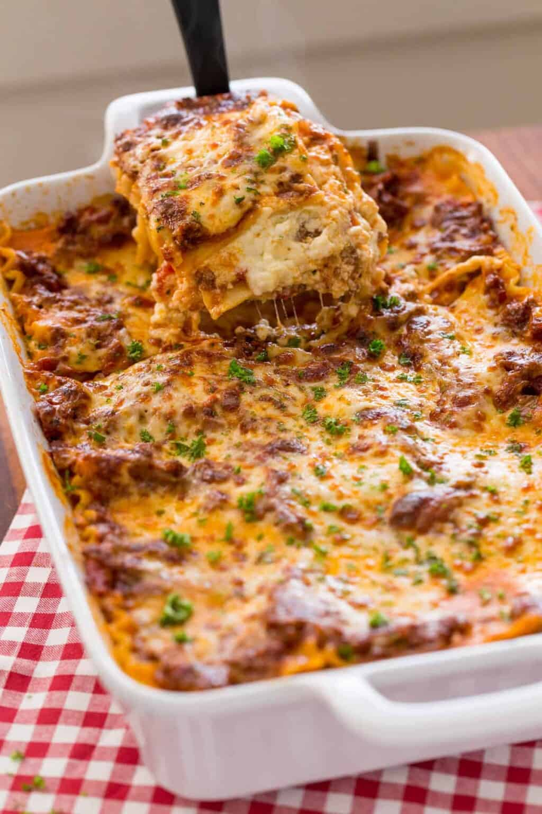

Lasagna

Description
This easy Lasagna Recipe is meaty, cheesy, and packed with flavor
in every bite. Homemade lasagna is better than any restaurant version
and it feeds a crowd for way less than going out to eat.
Ingredients
- Ground beef
- Garlic cloves
- Red wine (or beef broth)
- Marinara sauce
- Dried thyme
- Sugar
- Parsley
- Lasagna noodles
- Cottage cheese
- Ricotta cheese
- Mozarella cheese
- Egg
Steps
- Brown the beef - Add oil to a deep pan and sautee onion and beef until browned, 5 minutes then add garlic and stir another minute.
- Finish the sauce - Pour in 1/4 cup of wine and stir until almost evaporated. Add marinara, salt, pepper, thyme, sugar, and parsley; bring to a simmer, then cover and cook 5 minutes.
- Make the cheese filling - Combine all of the cheese sauce ingredients and 1 cup of mozzarella in a mixing bowl (reserve the rest for later).
- Prep - Preheat your oven to 375F and cook the lasagna noodles in a pot of well-salted water until al dente.
- Assemble - Spread 1/2 cup of the meat sauce on the bottom of a 9x13-inch casserole dish. Add 3 noodles, followed by 1/3 of the meat sauce, 1 cup of mozzarella, and half of the ricotta mixture. Repeat, then for the top layer, add 3 noodles, 1/3 of the meat sauce, and the remaining mozzarella.
- Bake - Cover with foil and bake at 375F for 45 minutes, then remove the foil and broil for 3 to 5 minutes, or until the cheese is lightly browned.
- Rest - Let the lasagna rest for about 30 minutes before cutting and serving.